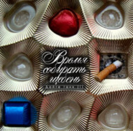
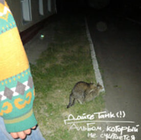
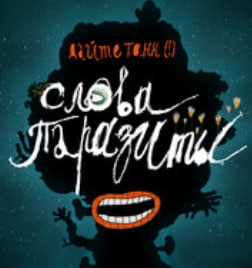
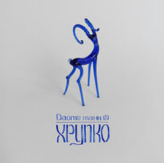

Информация о группе
Страна: Россия
Год создания: 2007
Состав группы: Дмитрий Мозжухин (вокал, гитара), Максим «Псевдоним» Кульша (гитара), Сергей «Raen» Акимов (бас-гитара), Илья Герасименко (ударные), Александр Тимофеев (саксофон)
Интересные факты
1. Изначально группа называлась Give Us A Tank(!), но в 2011 было принято решение изменить название на русский язык.
2. Само название группы связано с GTA 3. При вводе чит-кода "giveusatank" в игре с неба падал танк.
3. Добавить восклицательный знак Дмитрия вдохновил раздел с юмористическими историями в газете "Моя весёлая семейка", где редактор рубрики ставил восклицательный знак в скобках, когда хотел обратить на что-то внимание.
4. Альбом "На вырост" Дмитрий записал с использованием детского синтезатора, также игрушку можно увидеть на обложке альбома.
4. Дмитрий долгое время работал в IT-сфере. Позже ему пришлось уволиться, чтоб посвятить время написанию альбома "Человеко-часы".
цитаты из песен
Мне больше нравится слушать, как ты молчишь Только за этим я тебя и зову гулять.
© Паника
Мы бросаем в озёра монеты Если слухи о форме планеты верны Мы исследуем тёмные пятна И вернёмся обратно с другой стороны.
© Шанс
Сердце разбито на сто автономных сердец, Чтоб нажимать «Мне нравится»!
© Аппетит
лайки По камню в каждом ботинке, По палке в каждом колесе.
© Оплачено
Без нулей нет единиц, А без единиц нет нулей.
© Спам
Не о чем жалеть, кроме привычки жалеть обо всём.
© Спам
Весь мир – театр, но актёры не выйдут на бис. Что на барабане револьвера? Ура! Сектор «Приз»!
© Спам
| Год | название | Афиша |
| 2011 | Время собирать щебень |  |
| 2011 | Альбом, который не считается! |  |
| 2014 | Интим |  |
| 2021 | Слова-паразиты |  |
| 2021 | Хрупко |  |
© Все права защищeны.